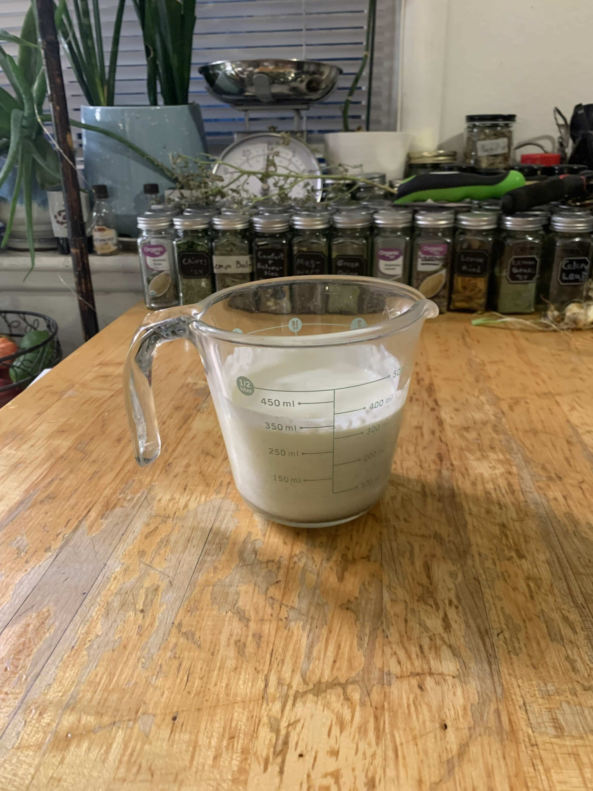
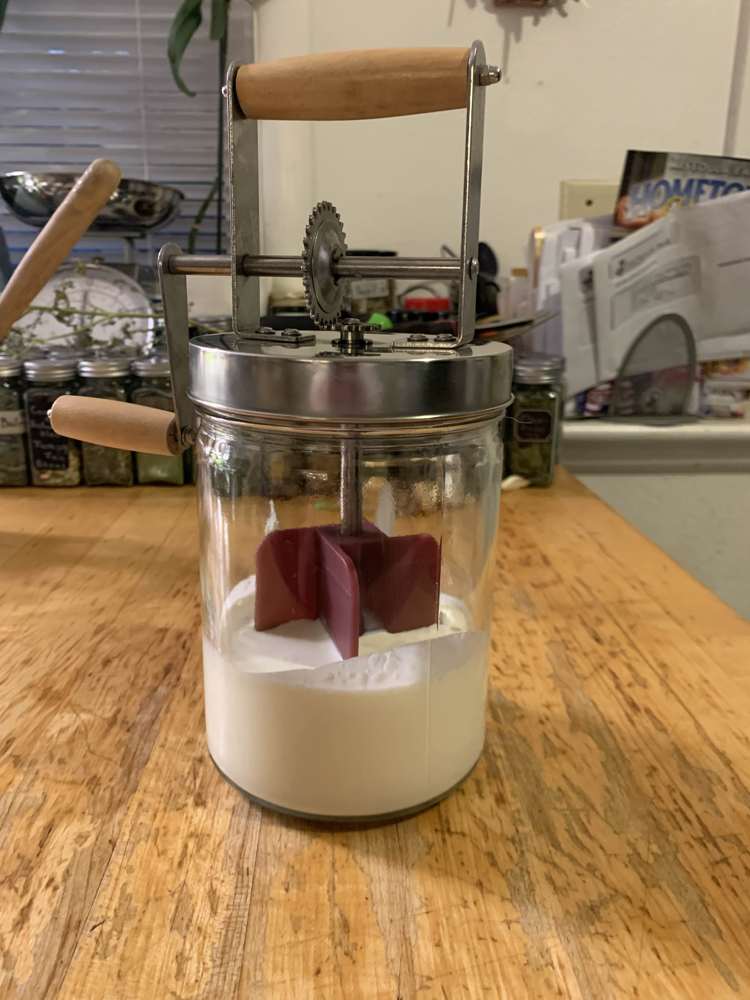
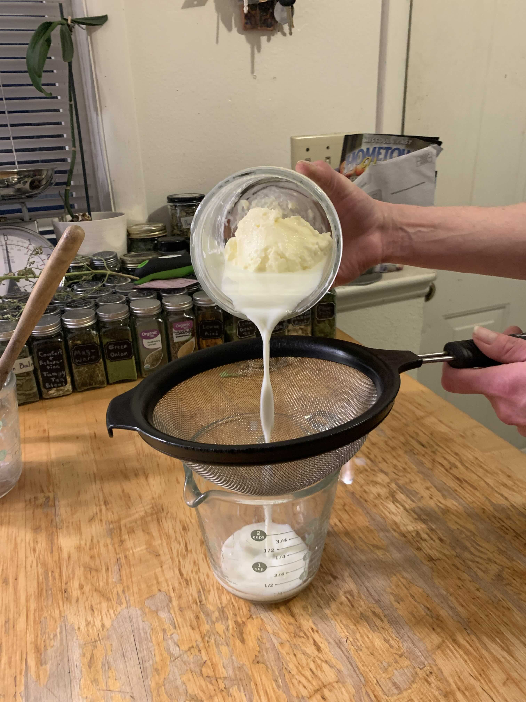
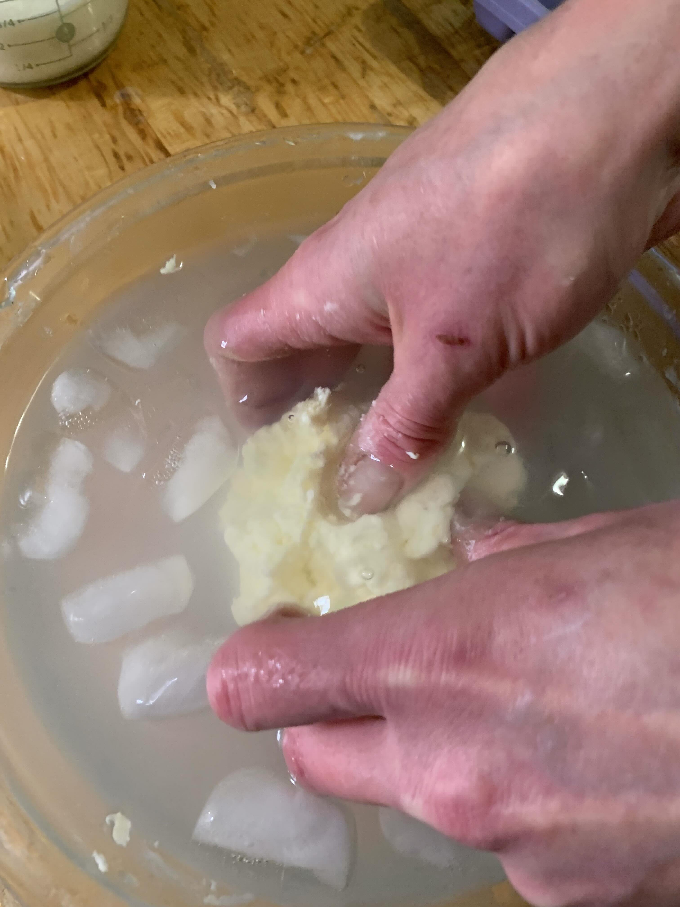
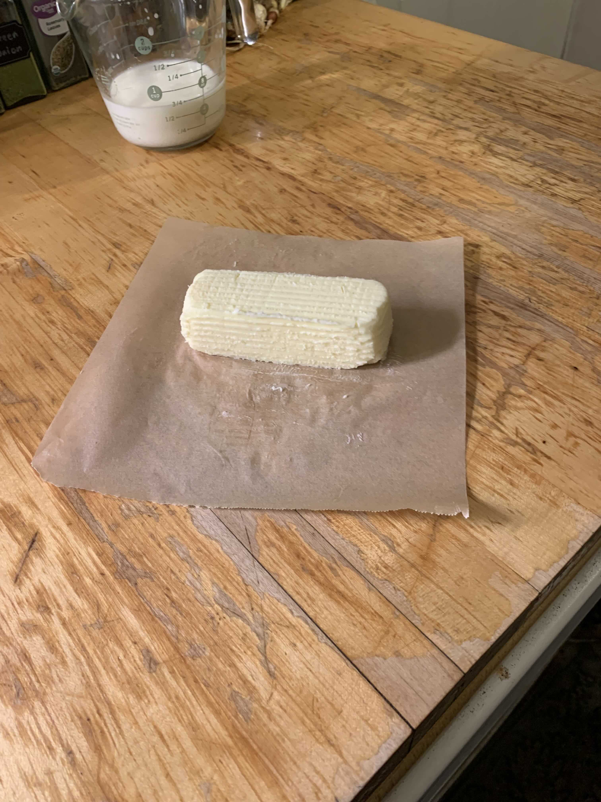

Step 1
Measure cream
Measure heavy cream into 2 cups and bring to room temperature. Do not microwave!
Step 2
Start mixing
Once cream has been brought to room temperature, start mixing or churning for 15 minutes or until creams starts breaking into butter and buttermilk.
Step 3
Remove butter from mixer/churner
Remove butter from vessel and strain through cheese cloth or sieve, separating butter from milk. You want to squeeze until all buttermilk is removed. Collect buttermilk for later use.
Step 4

Place in ice water
The butter lump will melt if left out, it's important to quickly put lump in ice water to prevent this.
Step 5
Knead the butter
While still submerged in ice water, knead butter, change water as it gets cloudy and continue until water stays clear. Getting all the buttermilk out is crucial to prevent it from going rancid.
Step 6
Storage
After butter is removed from ice water, salt to taste and store in refrigerator. As long as all buttermilk has been removed, butter should stay good for 10-14 days.
Tips
- When mixing, you may need to scrape sides of bowl.
- When kneading, keep rinsing in ice water and repeating until water runs clear.
- Save buttermilk for future use.